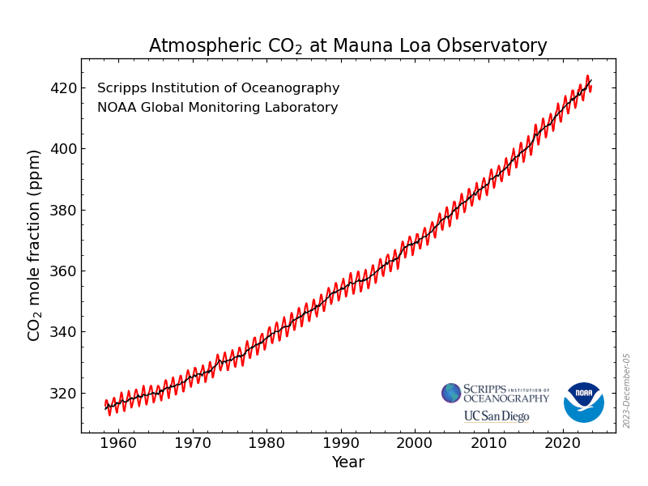
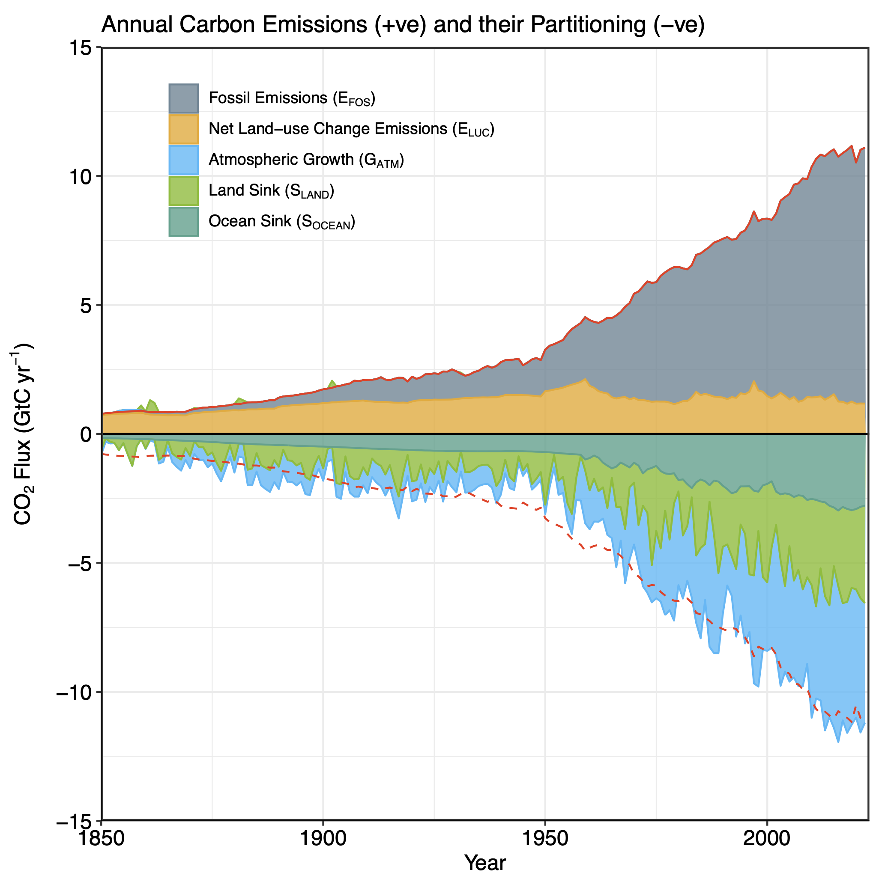
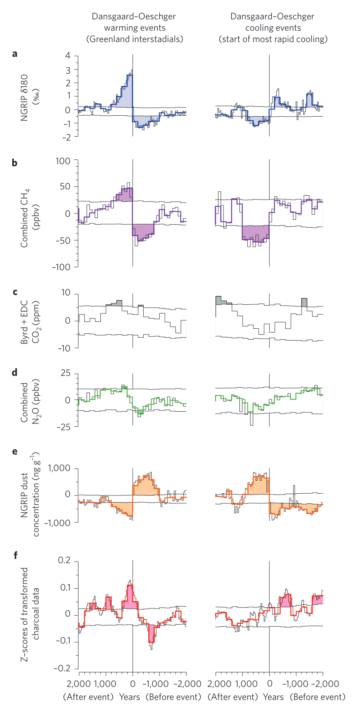

1 Introduction
As we drift further away from the domain that characterized the preindustrial Earth system, we severely test the limits of our understanding of how the Earth system will respond. – Falkowski et al. (2000)
The Earth system can be regarded as a coupled system in which its elements (atmosphere, ocean, cryosphere, biosphere, pedosphere, lithosphere) are interacting on various time scales. A primary goal of Earth System research is to understand the interactions occurring on time scales that are relevant for society in the context of anthropogenic climate change. It is now established with overwhelming evidence that anthropogenic CO2 emissions from the combustion of fossil fuels have caused a rise in atmospheric CO2 concentrations beyond levels reached over the past 800,000 years, and that this concentration increase is the dominant driver of climate change as observed over the last decades.
The terrestrial biosphere - land - is at the core of the Earth system. It connects all spheres. Atmospheric humidity and near-surface heating of the atmosphere are determined by how much water vegetation transpires and how much radiation it reflects or absorbs. Its carbon balance determines the accumulation of anthropogenic CO2 in the atmosphere and thus affects the CO2 gas exchange between the ocean and the atmosphere. The activity of plants is the driver for processes in the soil, the weathering of rocks. Any projection of climate change and climate impacts for the coming decades, centuries and millennia relies on an understanding of how the terrestrial biosphere responds and feeds back to climate and the Earth system. The carbon cycle of the terrestrial biosphere has a strong influence on how fast anthropogenic CO2 emissions will accumulate in the atmosphere. And it is through land ecosystems - both natural and agricultural - that climate impacts will be most clearly expressed. Understanding how climate influences the terrestrial biosphere is thus key to understanding climate impacts and projecting Earth system change.
This book focuses on the terrestrial biosphere, how its structure and functioning are shaped by climate, and how it affects atmospheric CO2 and climate change. The following set of phenomena, observations, and popularised concepts are an expression of the key role of the land in the Earth system. Over the course of this book, we will revisit these phenomena, observations, and concepts, introduce the underlying processes and principles for understanding them, and provide a scientific basis to address questions of immanent societal relevance. What is the role of the land biosphere in accelerating climate change (think positive feedbacks and tipping points), and in providing solutions for mitigating it (think forest restoration and other land-based mitigation options).
1.1 Annual swings in atmospheric CO2
The longest-running record of direct measurements of atmospheric CO2 is from the Mauna Loa Observatory, atop a volcano on Hawaii. This record has become iconic for documenting the rapid rise of atmospheric CO2 - a greenhouse gas - since the great economic acceleration after the Second World War. This has provided a basis for understanding the relationship between emissions of anthropogenic CO2 and its accumulation in the atmosphere and for estimating the climate impact of this important greenhouse gas.
The time series in Figure 1.1 shows not only the accelerating rise in atmospheric CO2 over the past decades, but also its regular annual swings - the “breathing of the Earth”. This is the result of the seasonal cycles in CO2 uptake and release by terrestrial ecosystems. CO2 uptake peaks in early early summer in the northern extratropics - driven by the high light availability and high photosynthetic rates of young leaves in the early summer months. CO2 release by respiring plants and soil microbes has a shifted seasonality and tends to have a smaller amplitude, compared to CO2 uptake. The net of the two drives changes in atmospheric CO2 which are measured here in the free atmosphere - unaffected by local anthropogenic sources - atop a volcano on Hawaii.
1.2 Year-to-year changes of the global carbon budget
Anthropogenic carbon emissions in the form of CO2, resulting from the combustion of fossil fuels and from land use change, are partly taken up by the ocean and partly by terrestrial ecosystems. The remainder remains in the atmosphere and drives the atmospheric CO2 growth (see Figure 1.1). Each of these components gets estimated and updated each year as the Global Carbon Budget. The latest scientific publication is Friedlingstein et al. (2023).
Estimates of each compenent are largely independent and rely on different types of observations, data, and methods. Fossil emissions are based on energy statistics and cement production data, land use emissions are based on land-use and land-use change data and forest carbon “bookkeeping models”. Atmospheric CO2 concentration, and hence the accumulation of C in the atmosphere, is measured directly. The ocean sink is estimated from global ocean biogeochemistry models and observation-based products. The land sink is estimated from dynamic global vegetation models (Friedlingstein et al. 2023).

Figure 1.2 shows that the largest year-to-year variations in the redistribution of anthropogenic CO2 emissions is in the land sink component. While variations in the ocean sink and in emissions are relatively small, the carbon balance of the terrestrial biosphere varies strongly between years. This leads to substantial variations in annual atmospheric CO2 growth rate. Annual variations in the land C balance have been found to originate mostly from semi-arid regions, where large year-to-year variations in precipitation, often linked to El-Nino-Southern-Oscillation climate variability, alter water limitation of vegetation and drought-related disturbances, including fire activity (Ahlström et al. 2015; Humphrey et al. 2018). This leads to large year-to-year variability in CO2 uptake and release by land ecosystems and leaves an imprint on the rise in atmospheric CO2. This also demonstrates the sensitivity of terrestrial C storage to climatic variations and that the response of the land biosphere to climate extremes can drastically alter the accumulation of anthropogenic CO2 in the atmosphere and thus the rate of climate change.
1.3 Responses to rapid climate change in the past
The climate of the past 11,000 years (11 ka) until the Industrial Revolution was relatively stable, at least in comparison to the climate of the Last Glacial period. This period was marked by millennial-scale climate oscillations where temperatures rose by up to 16\(^\circ\)C within a few decades (Oeschger et al. 1984; Dansgaard et al. 1993). When first discovered in measurments of an ice core recovered from Greenland, the massive excursions of the \(\delta^{18}\)O signal - a proxy for air temperature - were considered a measurement error. But the correspondence of similar excursions measured on a different Greenland ice core and the coincidence of the most recent such excursion with a similar pattern found in the \(\delta^{18}\)O signal of carbonate in the lake sediment of Gerzensee (near Bern) (Oeschger et al. 1984) confirmed the robustness of these rapid climate change events in the past. Reflecting this, these rapid climate swings between about 80 and 10 ka BP were named Dansgaard-Oeschger events. Today, Dansgaard-Oeschger events are undersood to be oscillations of the Earth system that occurr without external triggers, but arise from the interaction of ocean and ice sheet dynamics, and are confined to Earth system states corresponding to the glacial periods of the late Pleistocene (Stocker and Johnsen 2003; Vettoretti et al. 2022).
The terrestrial biosphere was strongly affected by these large and rapid climate changes and left its imprints in several palaeo records (Figure 1.3). In response to the climate warming, atmospheric methane (CH4) concentrations increased rapidly. Natural CH4 sources almost exclusively in land ecosystems (wetlands, fire). In parallel, the amount of dust transported to Greenland declined rapidly as climate warmed. This reflects an expansion of vegetation cover into dust-forming regions (e.g., deserts and peri-glacial areas). Also in parallel, nitrous oxide (N2O), another greenhouse gas, increased. This increase unfolded more gradually and reflects both oceanic and terrestrial sources. Furthermore, fire activity in the northern hemisphere, measured by charcoal deposits in Greenland ice cores, increased as the climate warmed.

These variations in land-mediated greenhouse gases, dust, and fire are attest to the large and hemisphere-scale changes in terrestrial biosphere functioning in response to climate variations. Of course, greenhouse gases, dust, and fire-related emissions of CO2 and aerosols are radiative forcing agents themselves and thus affect the climate. These changes during Dansgaard-Oescher events thus demonstrate the important role of the land biosphere in mediating Earth system changes.